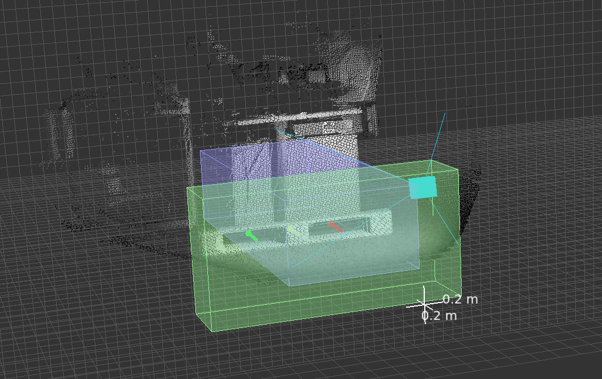

getPallet
The getPallet functionality of PDS is designed to detect the position and orientation of up to 10 pallets in the vicinity of autonomous and semi-autonomous pallet handling vehicles. Typically, such a system has a priori knowledge from warehouse management, such as the approximate distance to the pallet and the type of pallet.
getPallet supports the picking operation by determining the exact location and orientation of the pallet.
Usage guidelines
The typical use cases for getPallet are pallets with two pockets, either with broad blocks or thin stringers as vertical support structures.

By default, PDS is able to detect pallets with the following characteristics:
For a block-type pallet:
The pockets should be between 0.24 and 0.44 m,
The blocks should be between 0.05 and 0.4 m.
For a stringer-type pallet:
The pockets should be between 0.4 and 0.48 m,
The stringers should be between 0.02 and 0.08 m.
Two pocket pallets with different dimensions than the ones stated above will require specific configuration of the algorithm. Reach out to your ifm representative or to the support team for more details.
Input
To execute the getPallet command, the command parameter of the JSON configuration has to be set to getPallet.
Additionally, extra parameters can be provided such as the estimated distance to the pallet, depthHint, the type of pallet, palletIndex, and the order in which the results should be displayed, palletOrder.
An example is provided below in JSON, assuming an instantiated PDS application app0.
Note that when using the ifm Vision Assistant, the same structure is reflected in the application parameters.
{
"applications": {
"instances": {
"app0": {
"configuration": {
"customization": {
"command": "getPallet",
"getPallet": {
"depthHint": 1.5,
"palletIndex": 0,
"palletOrder": "scoreDescending"
},
}
}
}
}
}
}
Note
Only the command parameter has to be provided. The other parameters are optional.
If they are left blank, the default settings will be used.
Name |
Description |
Default Value |
|---|---|---|
|
Approximate distance (in meters along the X axis) between the origin of the calibrated coordinate system and the pallet. Providing an accurate depth hint allows the algorithm to target a specific area of the scene for pallet detection and speeds up processing times. |
|
|
Defines the type of pallet to detect. |
|
|
If multiple pallets are detected in the field of view, you can set the order of pallets based on three properties: |
|
The default values for each parameter can be different depending on the firmware version used. We recommend to check the current default, min and max values for each parameter using the schema.
Note
Other variants of pallets, having three or more pockets for example, require adjustments of the PDS settings. Reach out to your ifm representative or to the support team for more details.
Volumes of interest
When searching for a pallet, the PDS algorithm does not explore the entire space, but focuses the search on two delimited volumes, depending on the case.
This is done to reduce processing time by limiting the search area.
These two volumes are the depth estimation volume, which is only used when using an automatic depthHint, and the projection volume.
When using the ifm Vision Assistant, the two volumes can be displayed as shown below, where the green box represents the projection volume and the blue box represents the depth estimation volume. 
Depth estimation volume
The depth estimation volume, depthEstimationVoi, defines the volume of interest for automatic depth estimation.
Within this volume, a search will be conducted to estimate the distance of the pallet’s front face from the reference coordinate system.
The default values for depth estimation volume with respect to reference coordinate system are as follows, in meters:
X axis:
[1, 3]Y axis:
[-0.4, 0.4]Z axis:
[-0.1, 0.4]
In most cases, we recommend using a predefined depth hint, in which case this volume will not be used.
Projection volume
The projection volume, projectionVoi, defines the volume of interest for detecting the pose of the pallet pockets and center beam.
This volume is centered around the depthHint, estimated or provided by the user, which represents the estimated distance to the front face of the pallet.
The default values for the projection volume with respect to the reference coordinate system are as follows, in meters:
X axis:
[depthHint - 0.2, depthHint + 0.2]Y axis:
[-1, 1]Z axis:
[-0.6, 0.6]
The default values of the projection volume are displayed in the figure below, using the forks coordinates system as a reference.
Warning
The size of the volumes of interest are protected parameters, which means that they cannot be configured by the user.
The system will display their default values in the output of each result after running the getPallet command.
If your application requires different settings, please contact the ifm support team for assistance.
Workflow
The getPallet command expects the pallet to be in front of the forks and in the field of view of the camera, as illustrated below.
The getPallet command works as follows:
If the
depthHintis set to a positive value (this is the recommended option), the user is expected to have a priori knowledge about where the pallet is with respect to the forks coordinate system. In this case, the pallet’s pose estimation is performed inside the projection volume, which is set at thedepthHintincluding +/- 0.2 m.If the
depthHintis set to zero or a negative value, then the pallet will be searched for in the depth estimation volume. The majority of the pixels inside the depth estimation volume should be on the plane of the front face of the pallet. Once the distance to the pallet is estimated, the projection volume is set at this distance including a +/- 0.2 m buffer in X direction on each side. The pixels in the projection volume will be used to estimate the position of the pallet.
For further details of a typical getPallet trigger sequence see the flowchart below.
Output
The output of a getPallet command is formatted in JSON.
An example JSON result, where the position of one pallet was identified, is shown below:
"getPallet": {
"pallet": [
{
"angles": {
"rotX": -0.0016640322282910347,
"rotY": 0,
"rotZ": -0.02186517044901848
},
"center": {
"height": 0.10177253931760788,
"position": {
"x": 1.405822515487671,
"y": -0.08359906077384949,
"z": 0.07647071033716202
},
"width": 0.12625007331371307
},
"left": {
"height": 0.10320165008306503,
"position": {
"x": 1.4106969833374023,
"y": 0.13937455415725708,
"z": 0.07622720301151276
},
"width": 0.320925772190094
},
"right": {
"height": 0.10034343600273132,
"position": {
"x": 1.4009480476379395,
"y": -0.30657267570495605,
"z": 0.07671421766281128
},
"width": 0.3186997175216675
},
"score": 0.9556106328964233
}
],
"depthEstimationVoi": {
"xMax": 3,
"xMin": 1,
"yMax": 0.4000000059604645,
"yMin": -0.4000000059604645,
"zMax": 0.4000000059604645,
"zMin": -0.10000000149011612
},
"projectionVoi": {
"xMax": 1.600000023841858,
"xMin": 1.1999999284744263,
"yMax": 1,
"yMin": -1,
"zMax": 0.6000000238418579,
"zMin": -0.6000000238418579
}
},
The output has three main components: pallet, depthEstimationVoi and projectionVoi.
pallet
This component of the JSON result lists all the detected pallets (up to 10). For each pallet, the following information is provided:
Name |
Description |
|---|---|
|
Rotations components |
|
Position and size of the center beam, the left pocket and the right pocket respectively. |
|
The score of the pallet. The score corresponds to how well the pallet fits the pallet template. |
Note
Per default the pitch estimation rotY is disabled and will always display 0.
depthEstimationVoi and projectionVoi
The depthEstimationVoi and projectionVoi components provide the volumes that were used internally to detect the pallet:
Name |
Description |
|---|---|
|
Volume used in the algorithm to approximate the position of the front face of the pallet. |
|
Volume where the precise estimation of the positions of the two pockets, the center beam, and the rotation angle was performed. The pixels outside this area are discarded. |
Python example
To initialize and configure the PDS application to execute the getPallet command, please see the code example below.
#!/usr/bin/env python3
###########################################
###2023-present ifm electronic, gmbh
###SPDX-License-Identifier: Apache-2.0
###########################################
"""
Setup: * Camera: O3R222, 3D on port 2
* orientation: camera horizontally oriented (label up, Fakra cable to the left)
* Pallet: pallet in FoV @ 1.5m distance from the camera
"""
# %%
import json
import logging
import time
import numpy as np
from ifm3dpy.device import O3R, Error
from ifm3dpy.framegrabber import FrameGrabber, buffer_id
logging.basicConfig(level=logging.DEBUG)
logger = logging.getLogger(__name__)
# Device specific configuration
IP = "192.168.0.69"
CAMERA_PORT = "port2"
APP_PORT = "app0"
o3r = O3R(IP)
############################################
# Setup the application
############################################
# Ensure a clean slate before running the example
try:
o3r.reset("/applications/instances")
except Error as e:
logger.info(f"Reset failed: {e}")
# Set the extrinsic calibration of the camera
calibration = {
"transX": 0.0,
"transY": 0.0,
"transZ": 0.2,
"rotX": 0.0,
"rotY": 1.57,
"rotZ": -1.57,
}
logger.info(f"Setting extrinsic calibration for {CAMERA_PORT}")
o3r.set({"ports": {CAMERA_PORT: {"processing": {"extrinsicHeadToUser": calibration}}}})
logger.info(f"Creating a PDS instance with camera in {CAMERA_PORT}")
o3r.set(
{
"applications": {
"instances": {
APP_PORT: {"class": "pds", "ports": [CAMERA_PORT], "state": "IDLE"}
}
}
}
)
# %%
############################################
# Setup the framegrabber to receive frames
# when the application is triggered.
############################################
fg = FrameGrabber(o3r, o3r.port(APP_PORT).pcic_port)
fg.start([buffer_id.O3R_RESULT_JSON])
# Define a callback to be executed when a frame is received
def pallet_callback(frame):
"""Callback to be executed for each received pallet frame.
Retrieve the data from the corresponding buffer and
deserialize it into a JSON array.
:param frame: the result of the getPallet command.
"""
if frame.has_buffer(buffer_id.O3R_RESULT_JSON):
json_chunk = frame.get_buffer(buffer_id.O3R_RESULT_JSON)
json_array = np.frombuffer(json_chunk[0], dtype=np.uint8)
json_array = json_array.tobytes()
parsed_json_array = json.loads(json_array.decode())
logger.info(f"Detected pallet(s): {parsed_json_array['getPallet']['pallet']}")
fg.on_new_frame(pallet_callback)
############################################
# Trigger the getPallet command
############################################
# Provide the estimated distance to the pallet and the pallet type.
GET_PALLET_PARAMETERS = {
"depthHint": 1.2, # We recommend providing a depth hint for faster detections
"palletIndex": 0, # Block Pallet/EPAL pallet
}
# %%
logger.info("Triggering the getPallet command")
o3r.set(
{
"applications": {
"instances": {
APP_PORT: {
"configuration": {
"customization": {
"command": "getPallet",
"getPallet": GET_PALLET_PARAMETERS,
}
}
}
}
}
}
)
# Sleep to ensure we have time to execute the callback before exiting.
time.sleep(3)
# %%
fg.stop()